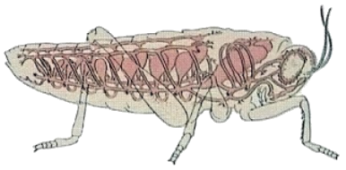

Tema 9. Aparatos circulatorio y respiratorio

• Hemocitos
• Hemocelo
• Diafragmas y cavidaes
• Vaso dorsal
• Órganos pulsátiles accesorios
• Espiráculos
• Tráqueas y traqueolas
Capítulo 15. Aparato circulatorio (texto)
Capítulo 16. Aparato respiratorio (texto)
Presentación. Aparatos circulatorio y respiratorio
Lecturas complementarias:
• Sistema respiratorio. Revisión bibliográfica por Saul Pardo (2019).